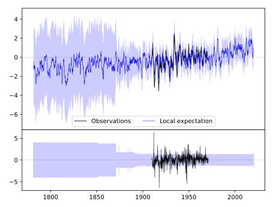
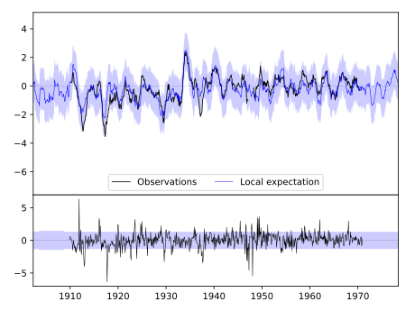
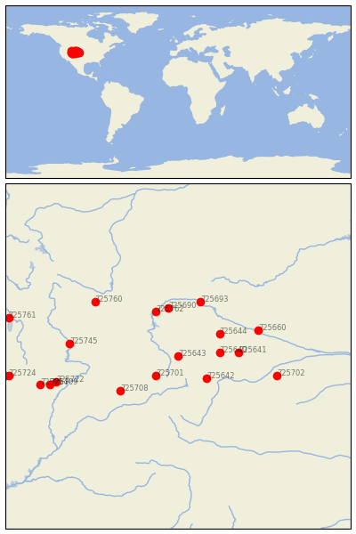

FOXPARK [USA]


| Neighbour | Name | Country | Distance | Lon/Lat | Years |
|---|
| 725643 | FOXPARK | USA | 0 | -106.1, 41.1 | 1909-1970 |
| 725701 | STEAMBOAT SPRINGS | USA | 89 | -106.8, 40.5 | 1891-2019 |
| 725642 | WATERDALE | USA | 108 | -105.2, 40.4 | 1902-1980 |
| 725640 | CHEYENNE WSFO AP | USA | 109 | -104.8, 41.2 | 1871-2020 |
| 725644 | CHUGWATER | USA | 133 | -104.8, 41.8 | 1893-2019 |
| 725641 | PINE BLUFFS 5W | USA | 159 | -104.2, 41.2 | 1893-2019 |
| 725762 | PATHFINDER DAM | USA | 166 | -106.8, 42.5 | 1900-1990 |
| 725690 | BATES CREEK #2 | USA | 168 | -106.4, 42.6 | 1893-2020 |
| 725708 | MEEKER | USA | 195 | -107.9, 40.0 | 1891-1980 |
| 725693 | DOUGLAS | USA | 197 | -105.4, 42.8 | 1909-1970 |
| 725660 | SCOTTSBLUFF/COUNTY-A | USA--------- | 226 | -103.6, 41.9 | 1944-2017 |
| 725702 | LE ROY | USA | 269 | -103.0, 40.5 | 1889-1980 |
| 725760 | LANDER | USA | 286 | -108.7, 42.8 | 1892-2020 |
| 725745 | GREEN RIVER | USA | 287 | -109.5, 41.5 | 1895-2019 |
| 725722 | FT DUCHESNE | USA | 332 | -109.9, 40.3 | 1889-2019 |
| 725709 | MYTON | USA | 351 | -110.1, 40.2 | 1932-1980 |
| 725814 | DUCHESNE | USA | 376 | -110.4, 40.2 | 1893-2019 |
| 725724 | HEBER | USA | 451 | -111.4, 40.5 | 1893-2019 |
| 725728 | SNAKE CREEK POWERHOU | USA | 459 | -111.5, 40.5 | 1893-2019 |
| 725761 | BERN | USA | 459 | -111.4, 42.3 | 1893-2019 |